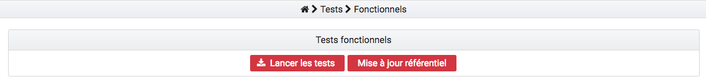
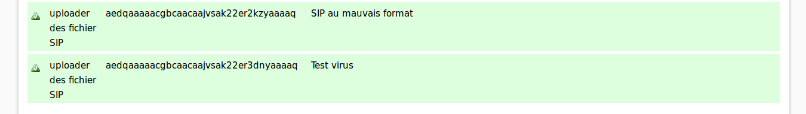
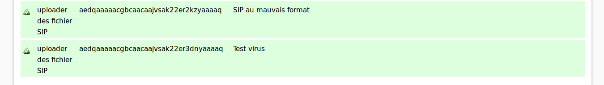

Tests Automatisés¶
Principes généraux¶
Tests de non régression¶
Les Tests de Non Régression (TNR) ont pour objectif de tester la continuité des fonctionnalités de Vitam. L’ajout de nouvelles fonctionnalités pouvant entraîner des bugs ou anomalies (régressions) sur des fonctionnalités existantes. L’outil de test de non régression va permettre de tester automatiquement le périmètre fonctionnel pré-existant afin de s’assurer de son bon fonctionnement dans le temps. Les TNR peuvent aussi être utilisés comme indicateur de bonne santé d’une plateforme.
L’ajout d’une nouvelle fonctionnalité dans la solution logicielle Vitam et parfois la correction d’un bug s’accompagne d’un ou plusieurs TNR.
Idéalement, les développeurs doivent lancer les TNR avant d’effectuer une Merge Request visant à intégrer une nouvelle fonctionnalité, afin de valider que le nouveau code introduit ne provoque pas de régressions dans le reste de la solution logicielle Vitam.
Suite à une nouvelle installation du produit, le lancement des TNR permet également de vérifier le bon déploiement de la solution logicielle.
Tests fonctionnels¶
Cucumber
Cucumber est un outil de tests fonctionnels, il est accessible via l’IHM recette dans le menu « Tests / Tests fonctionnels ». Ces tests sont effectués via des ordres écrits avec des phrases simples offrant une grande variété de combinaisons.
Il existe une liste de contextes et de fonctions disponibles. Il s’agit ensuite de les associer et les manipuler afin de créer son propre test.
Les résultats sont retournés sous forme de tableau
 

Behavior-Driven Development (BDD)¶
Le BDD est une méthode de collaboration s’appuyant sur un langage de programmation naturel permettant aux intervenants non techniques de décrire des scénarios de fonctionnement.
Les mots de ce langage permettent de mobiliser des actions techniques qui sont, elles, réalisées par les développeurs.
Le BDD est utilisé pour la réalisation des TNR, ce qui permet à tout intervenant du projet de pouvoir en réaliser.
Le framework de test utilisé dans le cadre de Vitam est Cucumber (https://cucumber.io/) qui utilise le langage Gherkin (https://github.com/cucumber/cucumber/wiki/Gherkin)
Pré-Requis¶
Dépot vitam-itest¶
La liste des TNR existants ainsi que tous leurs jeux de données associés sont déposés dans le dépôt git vitam-itest et également dans les ressources publiées à chaque release.
Il est donc nécessaire de le cloner avant toute chose.
Git LFS¶
Afin de permettre la gestion de fichiers volumineux dans git, il est nécessaire d’installer l’extension Git-LFS (https://git-lfs.github.com/).
Une fois git lfs installé, il est nécessaire de l’activer pour le dépôt vitam-itest sur votre environnement. Pour réaliser cette opération, il faut se placer à la racine du dépôt et exécuter la commande :
git lfs install
Méthodologie de test¶
Séquencement¶
Les tests sont regroupés par lot intellectuellement cohérent dans des fichiers .feature. Chaque fichier .feature contient au moins un scénario de test. Lorsqu’un fichier feature est lancé, alors tous les scénarios qu’il spécifie sont exécutés séquentiellement. Lorsqu’un scénario est en échec alors que son exécution n’est pas terminée, celle-ci s’interrompt et le scénario suivant est lancé.
Les fichiers feature sont lancés dans l’ordre alphabétique et sont indépendants les uns des autres. Il est donc possible d’exécuter une sélection de tests, sans devoir se soucier de dépendances inter-fichiers.
Il y a une exception à ce principe : le fichier nommé « _init.feature » est un scénario qui met en place l’environnement de test en important les ressources nécessaires (référentiel des règles de gestions, des contrats, des services agents…) à la bonne exécution des tests suivants.
Lancement complet des TNR¶
Il est possible de lancer tous les TNR via l’IHM recette en allant dans le menu Tests > Tests fonctionnels puis de cliquer sur le bouton « Lancer les tests ». Lors de ce processus, les bases sont vidées avant le lancement de chaque campagne de test. Comme vu précédemment, elles sont immédiatement réinitialisées avec des données de test, suite à l’exécution en premier du fichier _init.feature.